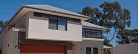
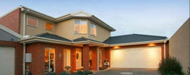
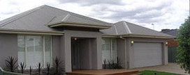

-

Product1
-

Product2
-

Product3
Born and bred on the Northern Beaches, local real estate agent and registered valuer Paul Franks is eager to get started with his own business when Ray White Warriewoodopens its doors in July.
Mr Franks offers property owners his experience as a valuer, in addition to being a licensed real estate agent.
He’s got 20 years experience selling and valuing more than 4000 properties on the Northern Beaches in recent years.
“I chose Ray White as they are the largest real estate brand in Australia and was completely sold on their forward thinking, state of the art technology systems and industry leading training and support. Naturally this will enable us to be market leaders on the Northern Beaches,” Mr Franks said.
The impressive newly built office is centrally located on Pittwater Road and will have maximum exposure to the approximate 40,000 local residents driving past daily.
Warriewood is famous for its incredible beach breaks and enviable coastal lifestyle.
Ray White NSW chairman Stephen Nell said he was delighted to welcome Mr Franks into the Ray White family.
“Paul is a proven successful salesperson and we are truly blessed to attract someone of his calibre and experience. We understand that growth is the oxygen for a business like ours”.
Mr Franks, who lives in Elanora Heights with his wife Monique and three young kids, says he’s ready to take the next step with Ray White.
With the support of his family and highly skilled team Mr Franks is looking forward to offering a genuine point of difference and continuing with his proven record breaking results.